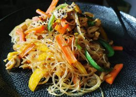

Vegetable Pasta

Description
This is a very light, quick-to-prepare dish. On hot summer days,
is is an excellent lunch or dinner. I make it with tofu, so it does
not contain meat.
Ingredients
- 1 pack of smoked tofu
- 1 carrot
- tricolor bell pepper
- 200g mushroom
- 400g pasta
- soy sauce
- salt, pepper
- chili flakes (optional)
Steps
- Cut vegetables into small pieces
- Fry vegetables in a little oil. Boil water for the pasta.
- Add the spices to the vegetables, cook the pasta for 9-12 minutes.
- Strain the cooked pasta, add to the vegetables, add soy sauce and
toast for 5 minutes.
- Serve sprinkled with sesame seeds.